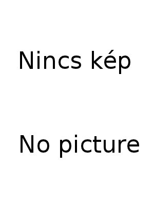

Az Ad Librum kiadói csoport könyveinek katalógusa
Ad Librum, Személyes Történelem, Könyv Guru

Egy magyar diáklány kalandjai Kínában.
Ad Librum Kiadó, 2008.
106 oldal 140x200 mm 1990 Ft ISBN 978-963-9888-50-0
Megvásárolható: Könyvesbolt.OnlineBookline
Az 1997. évi CXL. törvény 72/C. § 2 szerinti megjelenési dátum: 2008. 11. 11.
„A változás, az, hogy semmi nem állandó, erre az országra egyértelműen jellemző. Tulajdonképpen ez volt az egyik fő oka, amiért ezt a könyvet megírtam. Szeretném, ha minél többen megismernék az itt élő emberek igazi arcát. A boldogságukat, a könnyeiket, örömüket, bánatukat. Kicsit bepillantanának a mindennapi életükbe, és ezzel közelebb kerülnének ehhez a túlmisztifikált világhoz. Én megszerettem őket. A hibáikkal, rossz tulajdonságaikkal együtt. Mégis, szívemből szólnak ők, az első perctől fogva. Mert adtak nekem valamit, valamit önmagukból, abból a szemléletből, ahogy ők látják a világot. Sok mindenre tanítottak, és remélem én is hagytam magamból valamit az ő számukra.
(...)
Ja, neve is volt az új barátomnak. Idehaza már az óvodában ráragasztották a János (Jancsika) nevet, a későbbiekben is ezt használta, mivel az eredeti, Dong Hong Fang kiejtése és megjegyzése némi nehézséget okozott a magyar pedagógusoknak. Nekem is ez volt az egyszerűbb, még örült is neki, hogy végre valaki ezen a néven szólítja.
Ekkor már több mint egy hete Kínában tartózkodtam, és eddig a napig úgy gondoltam, csendben, szerényen élem le az itteni tíz hónapomat. De Jánosommal való találkozás után egyre nyilvánvalóbbá vált, hogy most sem kerülhet el a kalandok sora.”
© 2008-2026 Ad Librum Kft.